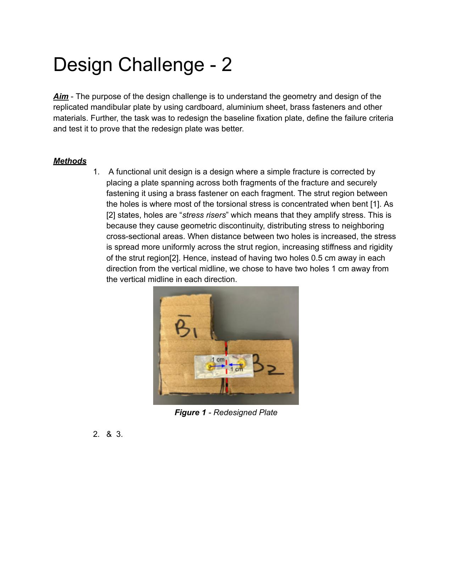
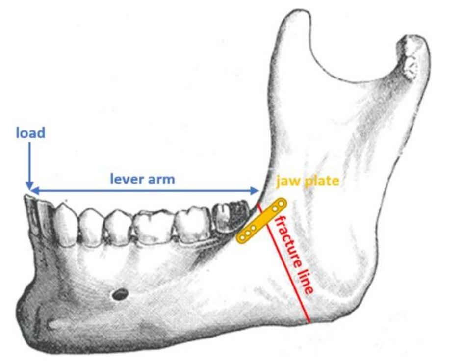
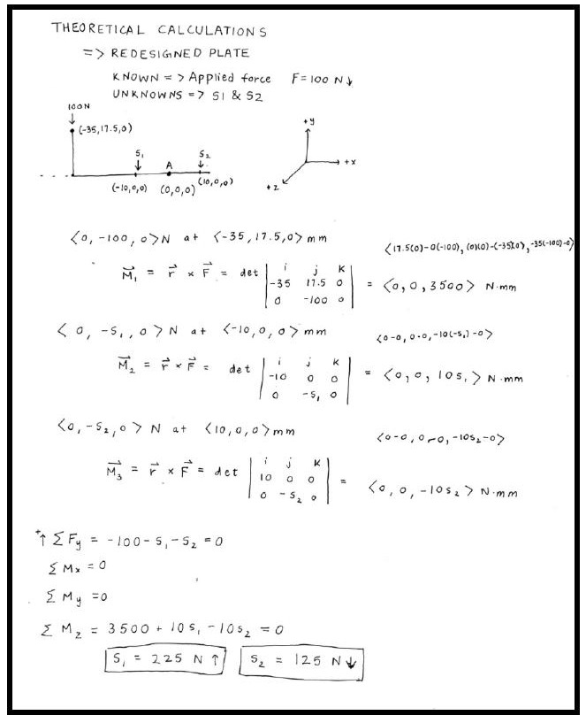
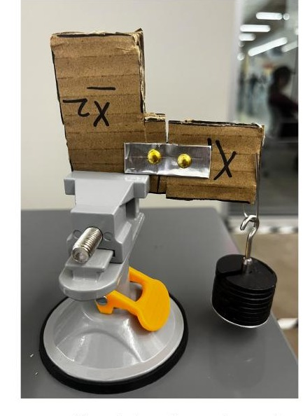
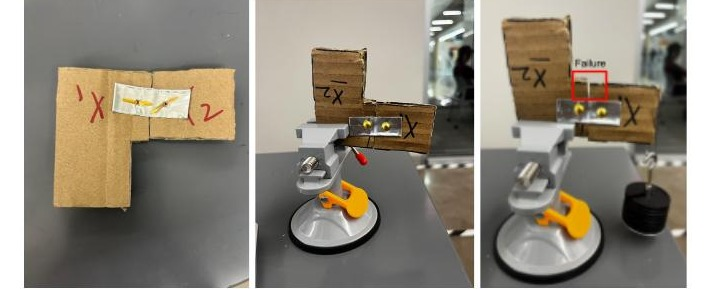

The mandible is one of the most commonly fractured bones in facial injuries, because it absorbs large forces during impacts and chewing. Surgeons stabilize these fractures with fixation plates, thin metal plates bridging the break, secured with screws, that need to hold the bone in alignment long enough to heal while still carrying normal jaw loads.
The challenge: analyze a basic two-screw plate design using 3D statics, build and mechanically test it, then redesign it, using only two screws, no more, to genuinely improve its fixation strength, and prove that improvement experimentally rather than just theoretically.

Started from the mechanics: screw holes act as stress risersthey concentrate stress and amplify it locally. The baseline plate placed its two screws only 0.5 cm from the fracture midline, concentrating load right at the weakest point. The fix was almost embarrassingly simple: move the screws farther out, 1 cm from the midline instead of 0.5 cm, so the load spreads more evenly across the strut region between them.
Load concentrated right at the weakest point of the strut, a smaller lever arm for distributing force.
Doubled the distance from the fracture midline, increasing the lever arm and spreading load more evenly.
Screw holes are stress risers, moving them out reduces peak local stress and raises strut stiffness.
Before building anything, both plates were solved as 3D rigid-body-equilibrium problems to predict the screw reaction forces (S1, S2) under a 100 N applied load. Treating the plate as a free body with the origin placed at the fracture point, the moment generated by the applied force was set equal to the sum of the moments generated by the two screw reactions, since the system is in static equilibrium, net force and net moment both have to equal zero.
Solving that system of equations for the redesigned geometry (screws at ±1 cm instead of ±0.5 cm from the midline) gave S1 = 225 N and S2 = 125 N, compared to S1 = 400 N and S2 = 300 N for the baseline plate. Moving the screws out was predicted to cut peak screw force nearly in half, which is exactly the kind of load reduction that should translate into a higher failure threshold once the plate is physically tested.
The calculation itself works out to three moment equations (about x, y, and z) plus a force-balance equation, solved simultaneously for the two unknown screw reactions. Because the setup is symmetric about the vertical midline, the x- and y-moment equations resolve to zero automatically, leaving a single equation in two unknowns from the z-moment balance combined with the vertical force balance, a system small enough to solve by hand, which is exactly what made it possible to sanity-check the redesign before ever touching aluminum or cardboard.

Built both plates from folded aluminum flashing riveted to a cardboard "mandible" with brass fasteners, then clamped each in a cantilever setup and loaded it with incremental 10g masses until failure, defined as 10° or more of angular displacement between the two fracture fragments, a threshold picked because it's clinically meaningful (malocclusion, chewing problems) while still easy to measure by eye with a protractor.
Each plate was folded from a single strip of aluminum flashing, doubled over for stiffness, then hole-punched at the marked screw positions and riveted through the cardboard with brass fasteners on both the front and back faces, mirroring how a real bone plate sandwiches a fracture from both sides. The cantilever test setup held the "proximal" fragment fixed in a bench vise while mass was hung from the "distal" fragment via a paperclip hook, letting the fracture gap itself do the work of revealing exactly when the plate could no longer hold the two halves in alignment. Three trials were run per plate design to make sure the failure mass wasn't a fluke.

The redesigned plate didn't just match the theoretical prediction, it beat expectations. Where the baseline plate failed at an average of just 45g, the redesigned plate held together until an average of 111.67g, more than double.

The theoretical model called it correctly: lowering S1 and S2 by moving the screws outward increased the lever arm for load distribution, raising strut stiffness and pushing failure to a much higher mass. Simple geometry, a 0.5 cm shift in screw placement, translated directly into a 2.5x improvement in how much force the plate could take before the fracture opened up.
Screw placement on a bone plate isn't arbitrary, it's a real design lever. A half-centimeter shift changed failure load by more than double in this experiment, which, translated to a real mandible plate, is the difference between a construct that holds during normal chewing and speaking versus one that doesn't. It's also a reminder that smaller screw holes and properly tensioned fasteners matter clinically: oversized holes are bigger stress risers, and a loose fastener can let fracture fragments separate, both real complication risks in actual maxillofacial surgery.
The complete 8-page solution report, FBDs, calculations, procedure, results, and discussion.